--- title: “蓝桥杯STM32G431RBT6” date: 2025-02-14 21:17:00 tags: “嵌入式32”
蓝桥杯
注意事项
-
移植lcd之后要记得在main函数内LCD_Init();开启lcd。
-
如果lcd显示时led全亮大概率是PD2锁存器出问题
-
lcd显示最好都各自带一个char text[30];
-
按键按下表启动，进入下一步
-
adc一定要在main开启校准函数HAL_ADCEx_Calibration_Start(&hadc2,ADC_SINGLE_ENDED);记住Calibration和ADC_SINGLE_ENDED
-
adc自写函数里每一次最好都开启一遍HAL_ADC_Start(hadc);
-
adc自写函数里value=HAL_ADC_GetValue(hadc);用uint32_t存储，之后转换到float数
-
adc的转换先乘以3.3再除以4096，顺序反了就归零了
-
串口发送简单，接收需要中断函数void HAL_UART_RxCpltCallback(UART_HandleTypeDef *huart)；
-
把串口接收单数据和数据数组分开写，用于接收的单数据是uint8_t类型，不是char类型
-
接收的数据数组是char类型
-
单数据接收函数HAL_UART_Receive_IT(&huart1,&data,1);最后接收的长度是1，而且中间的单数据必须取地址，这里接收函数最好用中断模式
-
要先在主函数写一个HAL_UART_Receive_IT(&huart1,&data,1);用来开启
//串口接收函数，没有写道串口中断函数内部，注意
if(接收到的数据>0)
{
if(接收到的数据==正常长度)
{
if(接收到的数据==正常值)
{
操作；
}
else
{
异常标记；
}
}
else
{
异常标记；
}
数据数组清零；
标记长度清零；
}
//主函数串口接收处理
if(接收长度！=0)
{
int 临时长度=接收长度；
延时1ms；
if(临时长度==接收长度)
{
串口接收处理函数；
}
}
-
发送数据函数HAL_UART_Transmit(&huart1,(uint8_t *)text1,strlen(text1),50);中间的char类型text要强制转换（uint8 *）,发送函数最好别用中断模式，第三个长度用strlen,最后一个数记为50
-
memset函数用法memset(datas,0,30);最后一个直接写数字就好
-
主函数需要开启pwm定时器HAL_TIM_PWM_Start(&htim17,TIM_CHANEL_1);
-
改变占空比函数__HAL_TIM_SET_COMPARE
-
基础定时器（定时中断功能）：开启示例HAL_TIM_Base_Start_IT(&htim3);使用中断模式
//main.h补全头文件
#include "stdbool.h"
#include "string.h"
#include "stdio.h"
#include "stdlib.h"
//cubemx生成代码要注意把部分头文件从main.c复制到main.h
产品手册
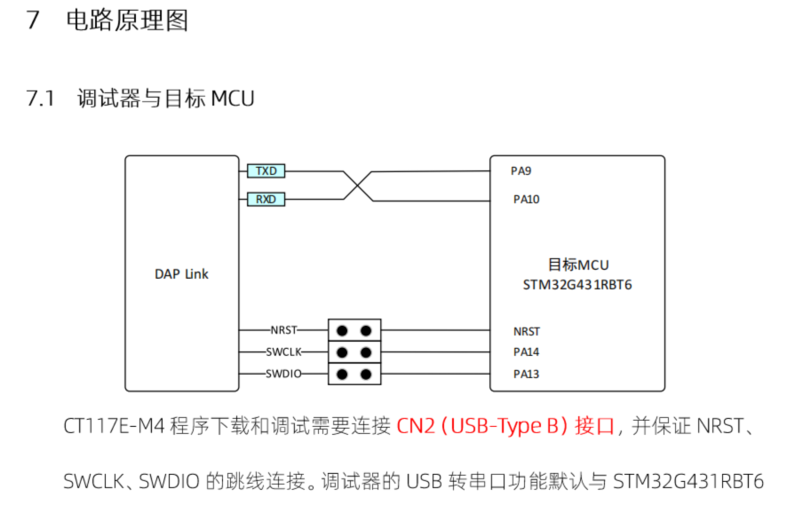
)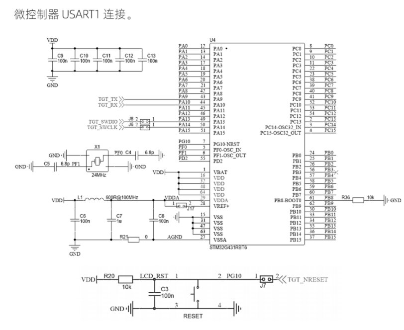
)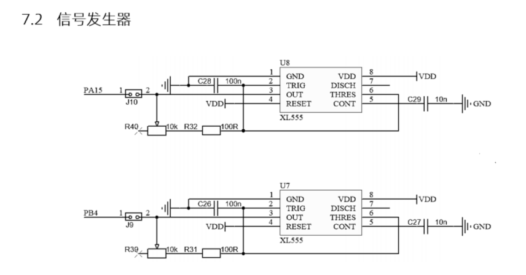
)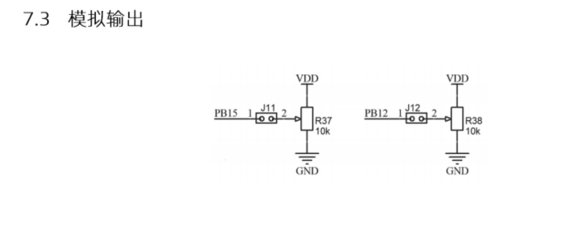
)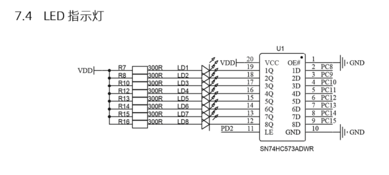
)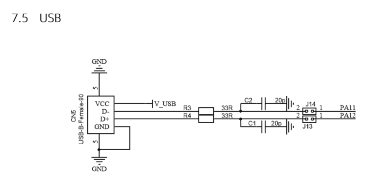
)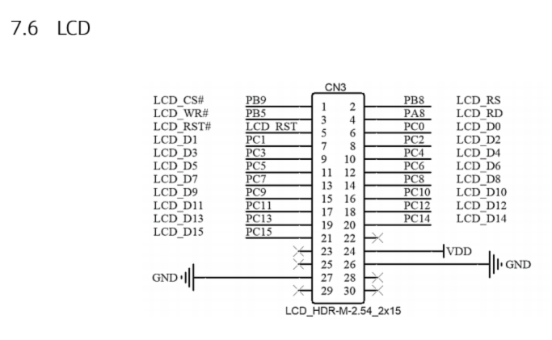
)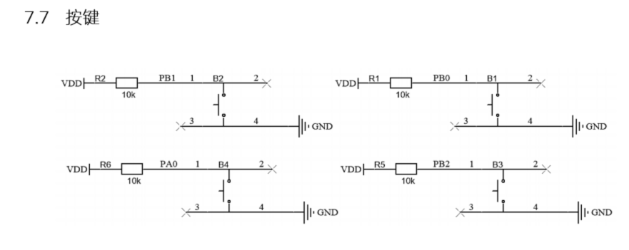
)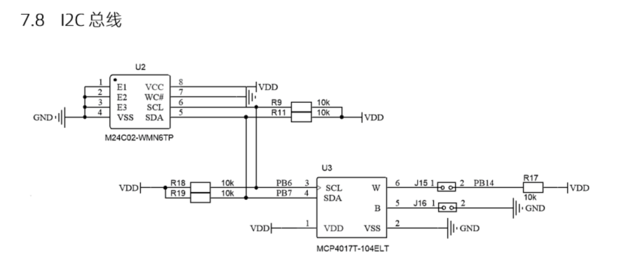
)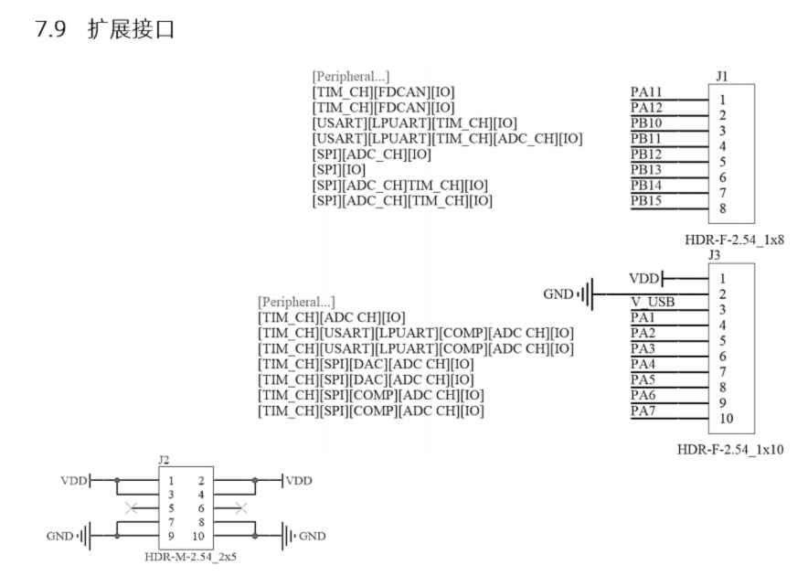
)初始配置
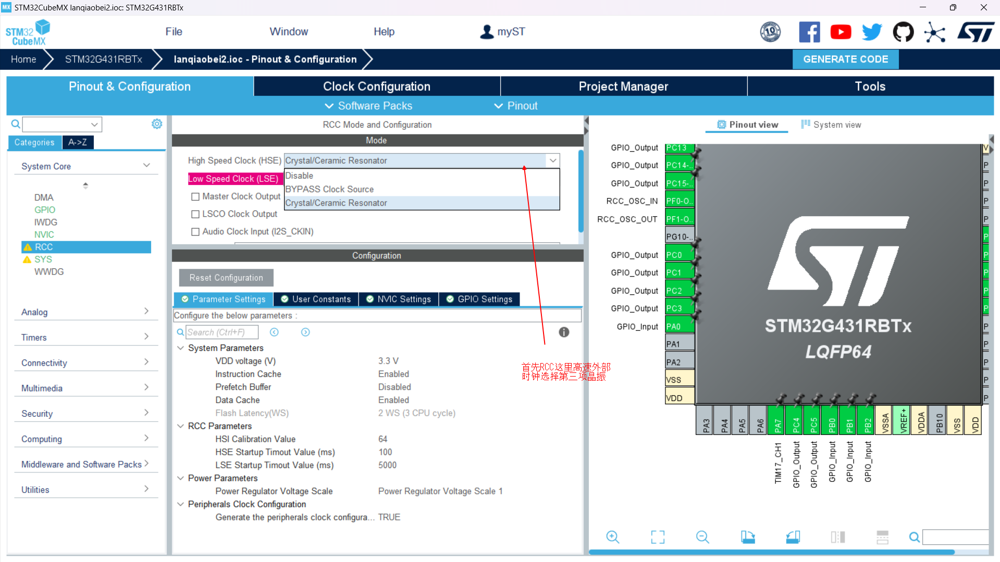
)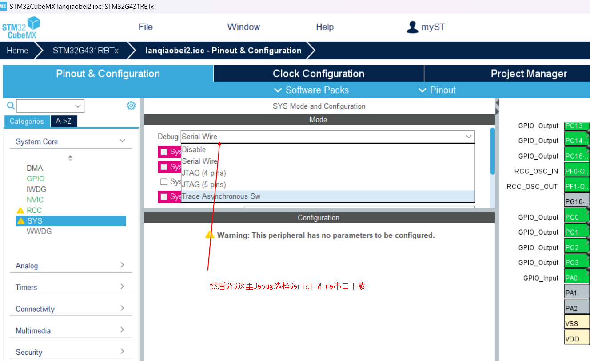
)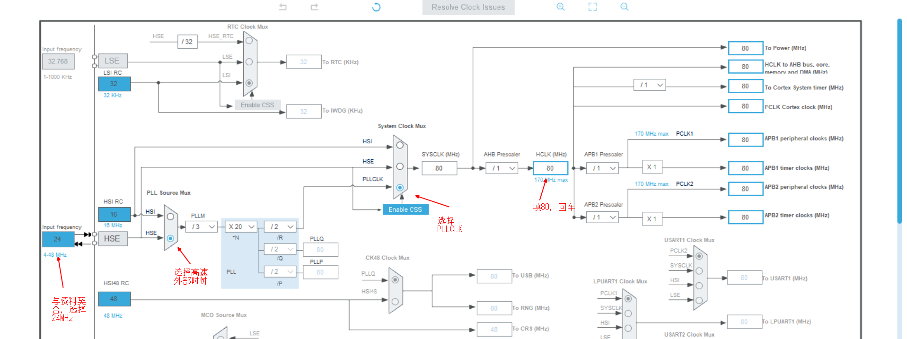
) )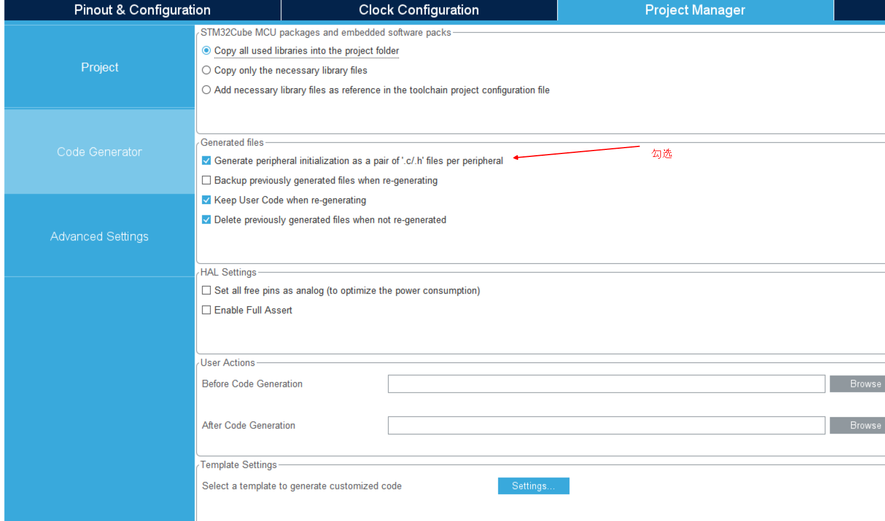
)然后创建工程代码
LED
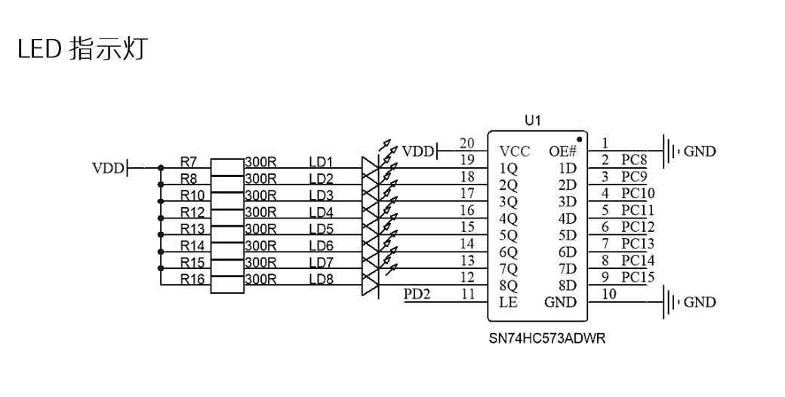
)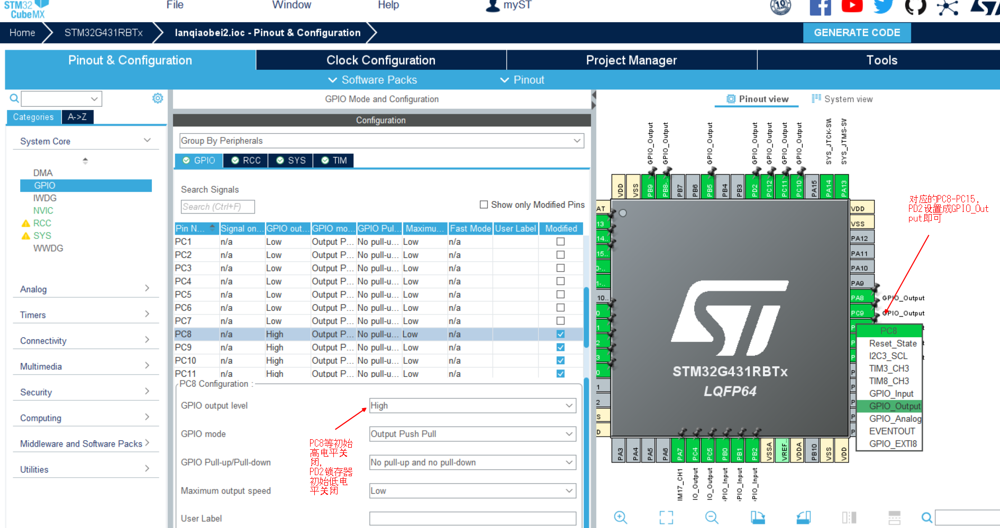
)//led.c
#include "led.h"
void LED_Disp(uchar t)
{
HAL_GPIO_WritePin(GPIOC,GPIO_PIN_ALL,GPIO_PIN_SET);//先把所有的都关上
HAL_GPIO_WritePin(GPIOC,t<<8,GPIO_PIN_RESET);//再把高八位设置
HAL_GPIO_WritePin(GPIOD,GPIO_PIN_2,GPIO_PIN_SET);//先开启PD2锁存器
HAL_GPIO_WritePin(GPIOD,GPIO_PIN_2,GPIO_PIN_RESET);//信息储存完后再关上PD2锁存器
}
void LED_Init(void)
{
LED_Disp(0x00);全部关上为初始化
}//led.h
#ifndef _LED_H_
#define _LED_H_
#include "main.h"
void LED_Disp(uchar t);
void LED_Init(void);
#endif
LED第二种写法
void Led_Set(unsigned char t)
{
HAL_GPIO_WritePin(GPIOC,GPIO_PIN_All,GPIO_PIN_SET);
HAL_GPIO_WritePin(GPIOD,GPIO_PIN_2,GPIO_PIN_SET);
HAL_GPIO_WritePin(GPIOD,GPIO_PIN_2,GPIO_PIN_RESET);
HAL_GPIO_WritePin(GPIOC,t<<8,GPIO_PIN_RESET);
HAL_GPIO_WritePin(GPIOD,GPIO_PIN_2,GPIO_PIN_SET);
HAL_GPIO_WritePin(GPIOD,GPIO_PIN_2,GPIO_PIN_RESET);
}key按键
选用基本定时器的定时功能来实现延时操作和检验按键状态
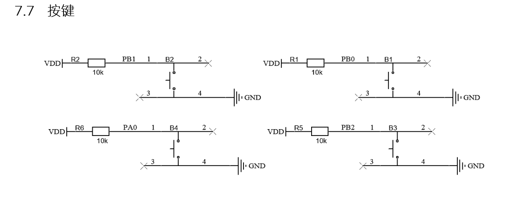
)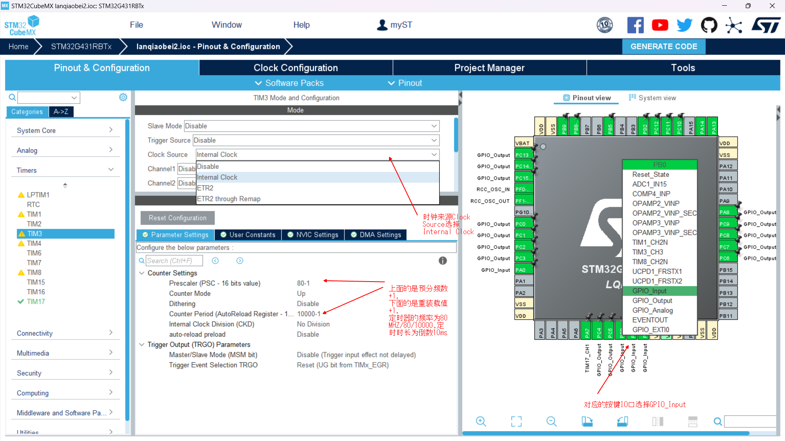
)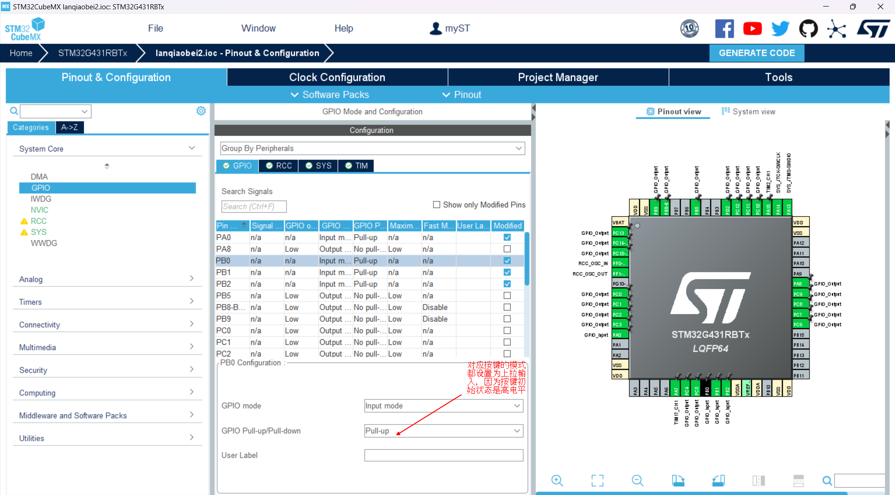
)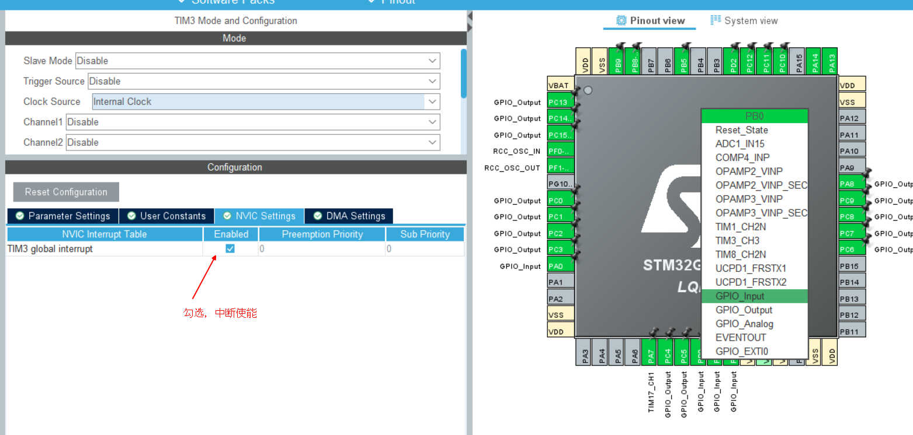
)//interrupt.c
#include "interrupt.h"
struct keys key[4]={0,0,0,0};
void HAL_TIM_PeriodElapsedCallback(TIM HandleTypeDef *htim)//中断回调函数，中断都会到这里
{
if(htim->Instance==TIM3)//判断是TIM3引发的中断
{
key[0].key_sta=HAL_GPIO_ReadPin(GPIOB,GPIO_PIN_0);//PB0
key[1].key_sta=HAL_GPIO_ReadPin(GPIOB,GPIO_PIN_1);//PB1
key[2].key_sta=HAL_GPIO_ReadPin(GPIOB,GPIO_PIN_2);//PB2
key[3].key_sta=HAL_GPIO_ReadPin(GPIOA,GPIO_PIN_0);//PA0
for(int i=0;i<4;i++)
{
switch(key[i].judge)
{
case 0:
{
if(key[i].key_sta==0)//按键按下
{
key[i].time=0;//按键按下，计时开始
key[i].judge=1;//进入第二步
}
}break;
case 1:
{
if(key[i].key_sta==0)//延时10ms后仍然是按下状态，确认按下，进入第三步
{
key[i].judge=2;
}
else //延时10ms后按键却处于没有按下状态，消抖，回到第一步
{
key[i].judge=0;
}
}break;
case 2:
{
if(key[i].key_sta==1)//20ms后按键已经松开
{
key[i].judge=0;//下次判断回到第一步
if(key[i].time<70)
{
key[i].flag=1;//按键短按过一次的标志位置为1
}
}
else //20ms后按键仍然未松开
{
key[i].time+=10;//计时+10ms
if(key[i].time>=70)
{
key[i].longflag=1;//大于70ms,长按标志位置为1（一直按着直接启动反应）
}
}
}break;
}
}
}
}//interrupt.h
#ifndef _interrupt_H_
#define _interrupt_H_
#include "main.h"
#include "stdbool.h" //想要使用bool类型必须包含这个头文件
struct keys{
uchar judge;
bool key_sta;
bool flag;
uint32_t time;
bool longflag;
};
void HAL_TIM_PeriodElapsedCallback(TIM_HandleTypeDef *htim);
#endif//main.c
#include "interrupt.h"
extern struct keys key[];
int main(void)
{
HAL_TIM_Base_Start_IT(&htim3); //这个必须打开，这个表示打开定时器3
while(1)
{
if(key[0].flag==1)//如果按键按下
{
//咋样咋样咋样咋样……
key[0].flag=0;//标志位用完了置为0
}
}
}graph TD 状态0 -->按键检测{是否按下} 按键检测 -->|按下|状态1 按键检测 -->|没有按下|状态0 状态1 -->按键检测2{是否仍然按下} 按键检测2 -->|仍然按下_消抖成功|状态2 按键检测2 -->|松开了_消抖掉|状态0 状态2 -->按键检测3{是否仍然按下2} 按键检测3 -->|一直按下_计时time++|状态2_1 按键检测3 -->|松开了_要判断time长短|状态2_2 状态2_1 -->时间判断{是否够长} 时间判断 -->|超过LONG_TIME_此时longflag挂起|状态0 时间判断 -->|没超过LONG_TIME_继续计时|状态2 状态2_2 -->时间判断2{是否够长2} 时间判断2 -->|没超过LONG_TIME_此时shortflag挂起|状态0
后面修改了下逻辑，松开后再判断长短，上面的代码没改哦
graph TD 状态0 -->按键检测{是否按下} 按键检测 -->|按下|状态1 按键检测 -->|没有按下|状态0 状态1 -->按键检测2{是否仍然按下} 按键检测2 -->|仍然按下_消抖成功|状态2 按键检测2 -->|松开了_消抖掉|状态0 状态2 -->按键检测3{是否仍然按下2} 按键检测3 -->|一直按下_计时|time++ 按键检测3 -->|松开了_|判断time长短 判断time长短 -->时间判断2{是否够长} 时间判断2 -->|没超过LONG_TIME_此时shortflag挂起|状态0 时间判断2 -->|超过LONG_TIME_此时longflag挂起|状态0
按键第二种写法（滴答定时器）
#define KB1 HAL_GPIO_ReadPin(GPIOB,GPIO_PIN_0)
#define KB2 HAL_GPIO_ReadPin(GPIOB,GPIO_PIN_1)
#define KB3 HAL_GPIO_ReadPin(GPIOB,GPIO_PIN_2)
#define KB4 HAL_GPIO_ReadPin(GPIOA,GPIO_PIN_0)
#define KBGET KB1 | (KB2<<1) | (KB3<<2) | (KB4<<3) | 0XF0
uint16_t short_key=0;
uint16_t long_key=0;
__IO uint32_t KeyTick=0;
void Key_Process(void)
{
if(uwTick-KeyTick<10)return;//10ms
KeyTick=uwTick;
uint16_t temp=(KBGET)^0XFF;
short_key=temp&(temp^long_key);
long_key=temp;
if(short_key&0x01)//B1
{
//Menu_Flag=!Menu_Flag;
//Led_Set(0x01);
}
if(short_key&0x02)//B2
{
//Led_Set(0x02);
//PWM_Set(1000,40);
}
if(short_key&0x04)//B3
{
//Led_Set(0x04);
//PWM_Set(2000,30);
}
if(short_key&0x08)//B4
{
//Led_Set(0x08);
//PWM_Set(3000,20);
}
}按键双击
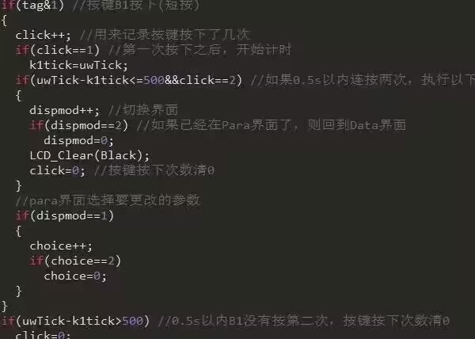
)//双击
if(短按)
{
标志位++;
if(标志位==1)
{
//开始计时
}
if(标志位==2&&时间<0.5s)
{
双击操作；
标志位=0；
}
}
if(时间>=0.5)
{
标志位=0；
}按键长按
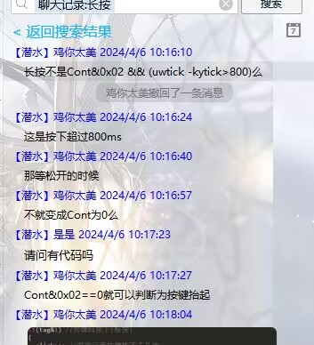
)LCD
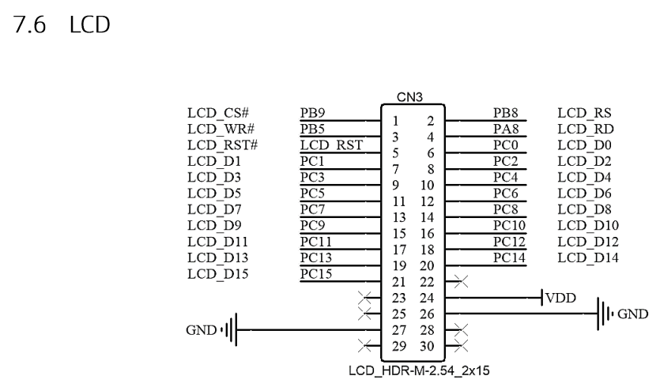
)LCD的cubemx配置配置对应IO口为输出即可，也可以不配置，直接copy数据包代码
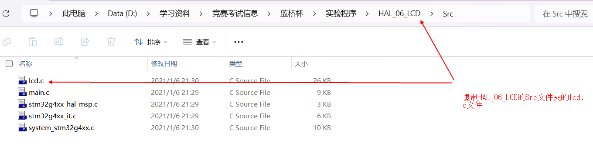
)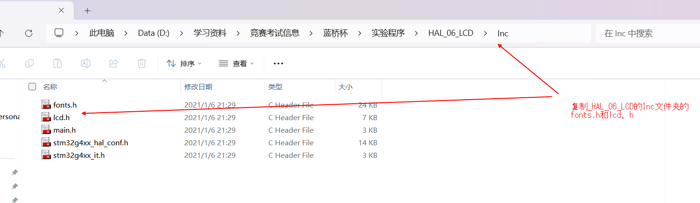
)//main.c
int main(void)
{
LCD_Init();
LCD_Clear(Blue);
LCD_SetBackColor(Blue);
LCD_SetTextColor(White);
char text[30];
sprintf(text," frq_eep:%d ",temp);
LCD_DisplayStringLine(Line1, (uint8_t *)text);
while(1)
{
}
}定时器输出PWM
共10个定时器分别为
2个基本定时器（TIM6和ITIM7) 。
3个通用定时器（TIM2TIM4) :全功能通用定时器。TIM17):只有1个或者2个通道。
3个通用定时器（TIM15
2个高级控制定时器（TIM1和ITIM8) 。
以下是基本定时器的输出PWM配置
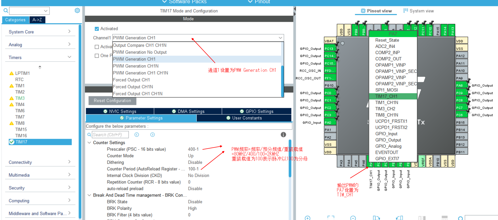
)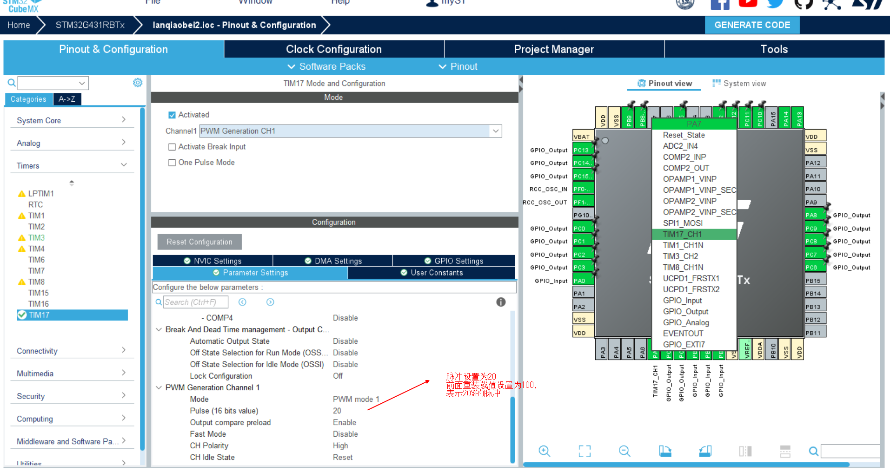
)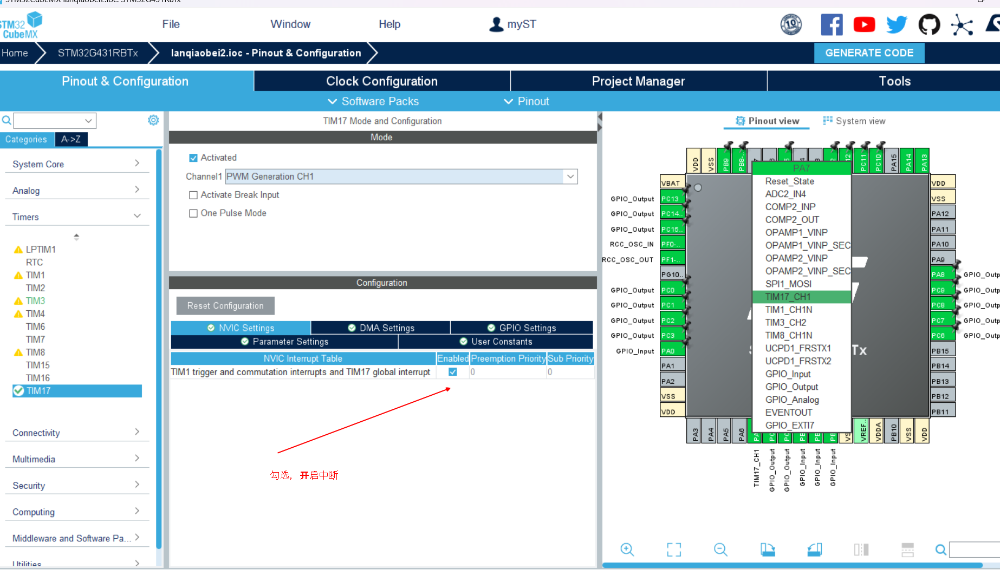
)//main.c
uchar duty=20; //uchar是unsigned char ,main.h里面define一下
int main(void)
{
HAL_TIM_PWM_Start(&htim17,TIM_CHANEL_1); //记住开启输出PWM的定时器
while(1)
{
}
}
void key_proc(void)
{
if(key[3].flag==1)//按键来回切换PA7输出PWM
{
duty=(（duty==20）?0:20);
__HAL_TIM_SetCompare(&htim17,TIM_CHANEL_1,duty); //记住改占空比
key[3].flag=0;
}
}输入捕获定时器
共10个定时器分别为
2个基本定时器（TIM6和ITIM7) 。
3个通用定时器（TIM2TIM4) :全功能通用定时器。
3个通用定时器（TIM15TIM17):只有1个或者2个通道。
2个高级控制定时器（TIM1和ITIM8) 。
两个555定时器生成占空比为50%的脉冲通过IO口PA15和PB4输入，电阻R40,R39调节可以改变信号脉冲的频率。
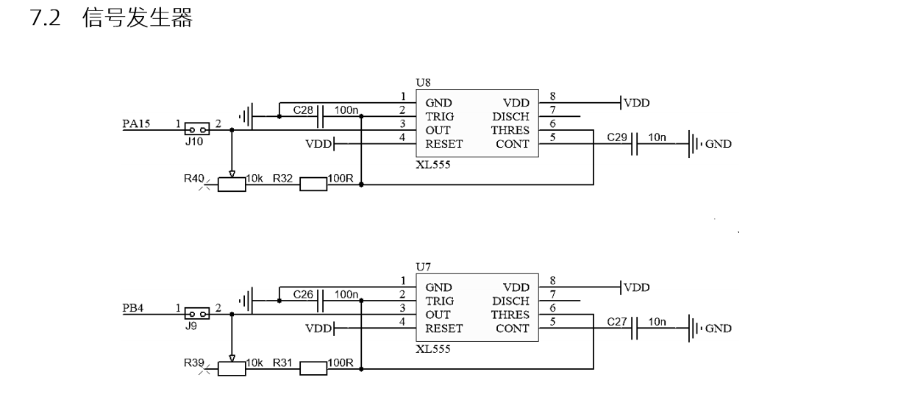
)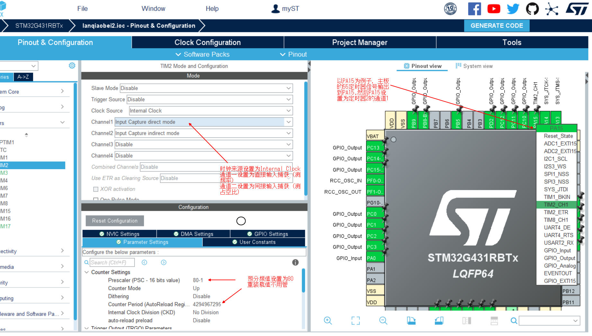
)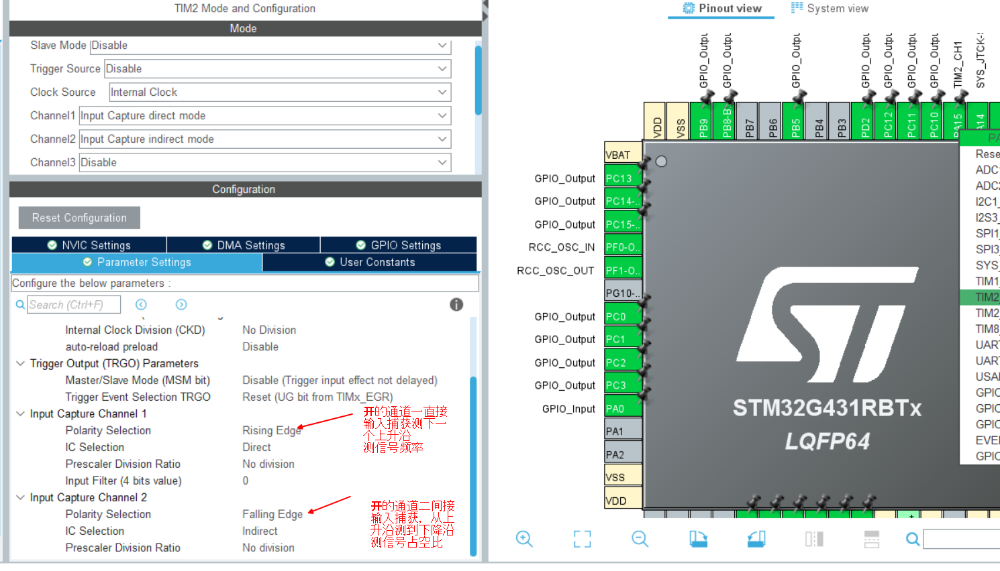
)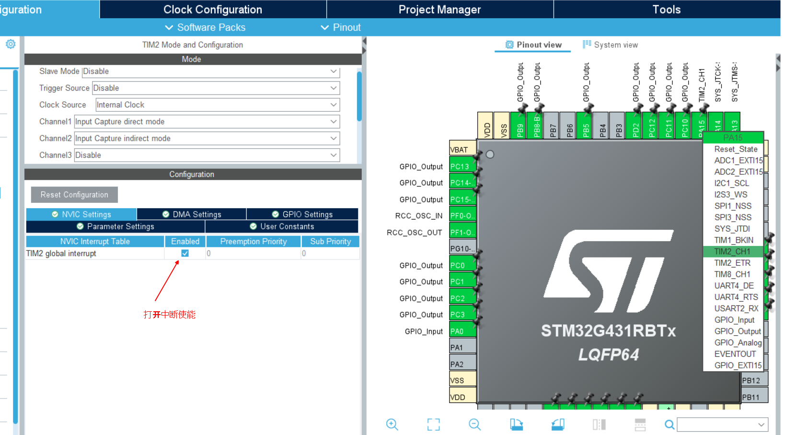
)//interrupt.c
#include "interrupt.h"
double val=0;//直接输入捕获定时值
double val2=0;//间接输入捕获定时值
float frq=0;//输入捕获频率
float ca_duty=0;//输入捕获占空比
void HAL_TIM_IC_CaputureCallback(TIM_HandleTypedef *htim)//输入捕获定时器回调函数
{
if(htim->Instance==TIM2)//如果起作用的是TIM2
{
if(htim->Channel==HAL_TIM_ACTIVE_CHANNEL_1)//中断消息来源，选择直接输入的通道
{
val=HAL_TIM_ReadCapturedValue(htim,TIM_CHANNEL_1);//读取TIM2直接捕获的定时器计数值
val2=HAL_TIM_ReadCapturedValue(htim,TIM_CHANNEL_2);//读取TIM2间接捕获的定时器计数值
__HAL_TIM_SetCounter(htim,0);//读取完成后将计数器清零
frq=(80000000/80/val);//这里的val相当于是TIM2直接捕获的重装载值，计算出频率
ca_duty=(val2/val)*100;//计算占空比
HAL_TIM_IC_Start(htim,TIM_CHANNEL_1);//重新开启输入捕获定时器的通道一
HAL_TIM_IC_Start(htim,TIM_CHANNEL_2);//重新开启输入捕获定时器的通道二
}
}
}//interrupt.h
#ifndef _interrupt_H_
#define _interrupt_H_
#include "main.h"
void HAL_TIM_IC_CaptureCallback(TIM_HandleTypeDef *htim);//输入捕获定时器回调函数
#endif//main.c
extern float frq;//输入捕获频率
extern float ca_duty;//输入捕获占空比
int main(void)
{
HAL_TIM_IC_Start_IT(&htim2,TIM_CHANNEL_1);
HAL_TIM_IC_Start_IT(&htim2,TIM_CHANNEL_2);//打开输入捕获定时器
while(1)
{
}
}
void show_proc(void)
{
sprintf(text," FRQ:%.2f ",frq);
LCD_DisplayStringLine(Line8, (uint8_t *)text);
sprintf(text," DUTY:%.2f ",ca_duty);
LCD_DisplayStringLine(Line9, (uint8_t *)text);
}ADC数模转换
电压从0v到3.3v的变化
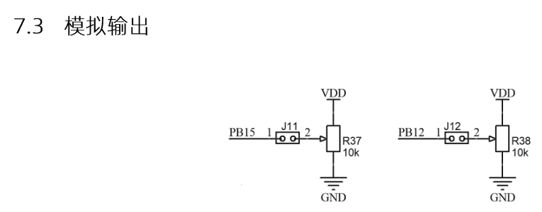
)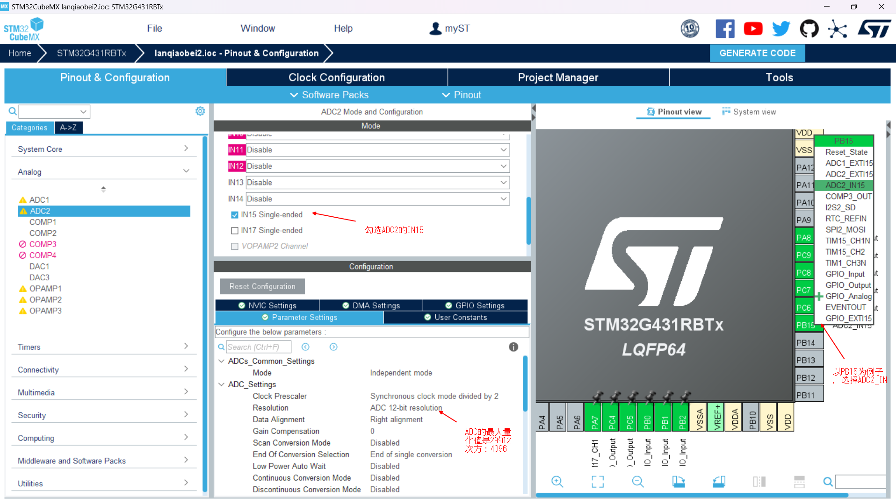
)//psbadc.c
#include "bspadc.h"
double GetADC(ADC_HandleTypeDef *pin)
{
uint32_t adc;
HAL_ADC_Start(pin);//开启这个ADC对应引脚的adc
adc=HAL_ADC_GetValue(pin);//获取ADC值
return adc*3.3/4096; //读取到的adc是2的12次方内的量化值，将其变成3.3V内的量化值
}//bspadc.h
#ifndef _bspadc_H_
#define _bspadc_H_
#include "main.h"
double GetADC(ADC_HandleTypeDef *pin);
#endif//main.c
int main(void)
{
HAL_ADCEx_Calibration_Start(&hadc1,ADC_SINGLE_ENDED);//ADC校准函数 使用后测量更准确
while(1)
{
}
}
void show_proc(void)
{
sprintf(text," R37:%.2lf ",GetADC(&hadc2));
LCD_DisplayStringLine(Line9, (uint8_t *)text);
}I2C读写eeprom
需要将PB6,PB7设置为输出模式
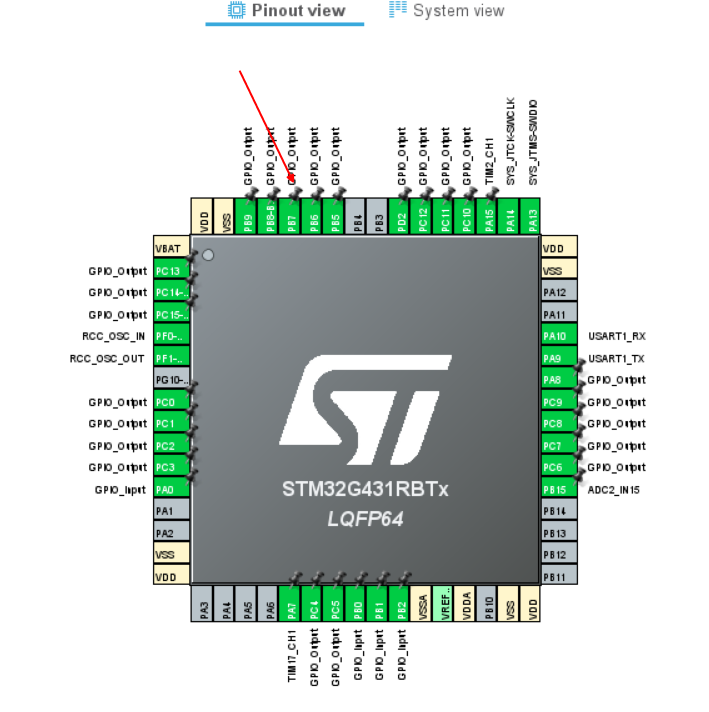
)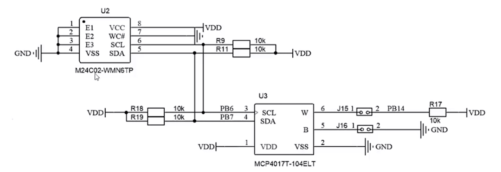
)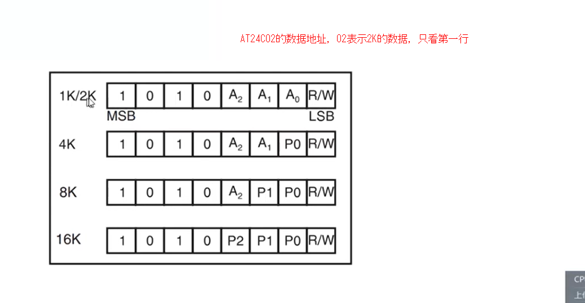
)0XA0:写，0XA1:读（01与MPC相同，看手册）
I2C读取写入eeprom、MPC
uint8_t MPC_read(void)
{
uint8_t temp;
I2CStart();//开启I2C
I2CSendByte(0X5F);//发送读
I2CWaitAck();//等待
temp=I2CReceiveByte();//接收数据
I2CSendNotAck();//发送非应答
I2CStop();//关闭I2C
return temp;
}
void MPC_write(uint8_t data)
{
I2CStart();//开启I2C
I2CSendByte(0X5E);//发送写
I2CWaitAck();//等待
I2CSendByte(data);//发送数据
I2CWaitAck();//等待
I2CStop();//关闭I2C
}
void eeprom_write(uint8_t add,uint8_t data)
{
I2CStart();//开启I2C
I2CSendByte(0Xa0);//发送写
I2CWaitAck();//等待
I2CSendByte(1);//发送add
I2CWaitAck();//等待
I2CSendByte(data);//发送数据
I2CWaitAck();//等待
I2CStop();//关闭I2C
}
uint8_t eeprom_read(uint8_t add)
{
uint8_t temp;
I2CStart();//开启I2C
I2CSendByte(0Xa0);//发送写
I2CWaitAck();//等待
I2CSendByte(1);//发送add
I2CWaitAck();//等待
I2CStart();//开启I2C
I2CSendByte(0Xa1);//发送读
I2CWaitAck();//等待
temp=I2CReceiveByte();///接收数据
I2CSendNotAck();//发送非应答
I2CStop();//关闭I2C
return temp;
}在main中的实际操作
//main.c
int main(void)
{
I2CInit();
while(1)
{
}
}
void key_proc(void)
{
if(key[1].key_flag==1&&view==0)//eeprom写入数据
{
uchar frq_h=frq>>8;//at24c02只能读取8位，而frq是16位
uchar frq_l=frq&0xff;//把at24c02拆分成上八位和下八位
eeprom_write(1,frq_h);
HAL_Delay(10);//操作之间需要延时
eeprom_write(2,frq_l);
key[1].key_flag=0;
}
}
void show_proc(void)
{
if(view==0)
{
uint16_t temp=(eeprom_read(1)<<8)+eeprom_read(2);//把8位数据恢复成16位
sprintf(text," frq_eep:%d ",temp);
LCD_DisplayStringLine(Line1, (uint8_t *)text);
}
}USART通信
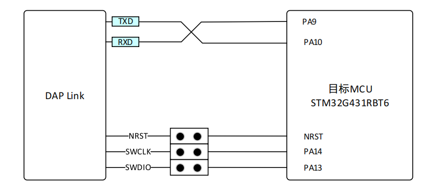
)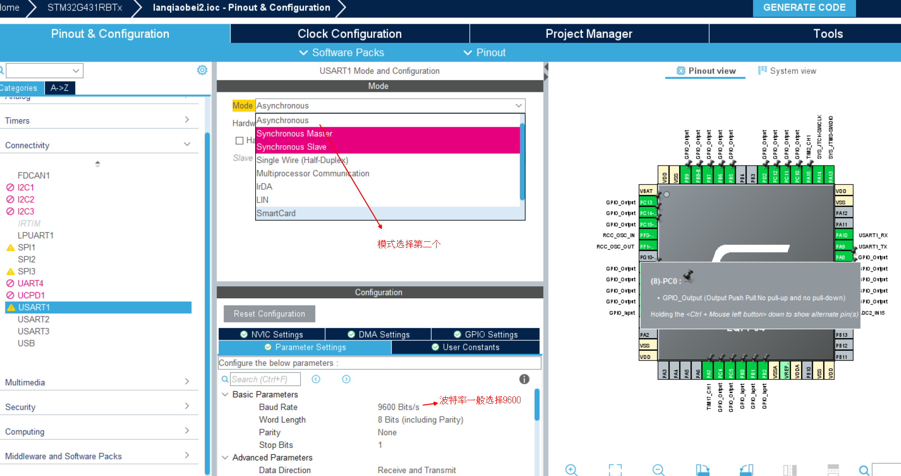
)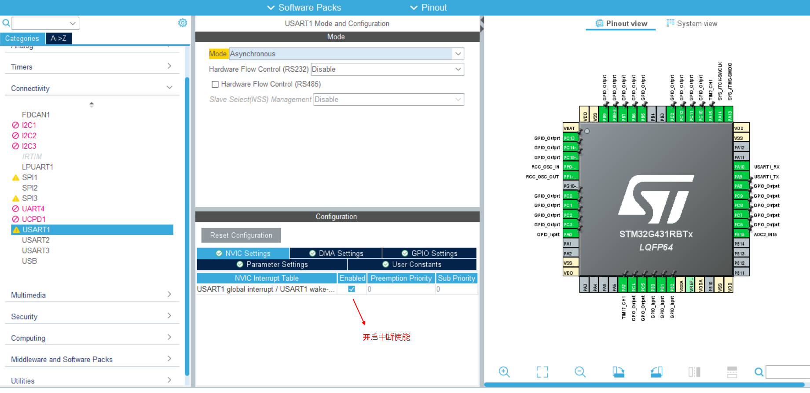
)USART发送
//main.c
int main(void)
{
while(1)
{
char temp[20];
sprintf(temp,"frq=%d\r\n",frq);
HAL_UART_Transmit(&huart1,(uint8_t *)temp,strlen(temp),50);
}
}UART接收
//main.c
extern char rxdata[30];
extern uint8_t rxdat;
extern uchar rx_pointer;
char car_type[5];
char car_data[5];
char car_time[24];
void uart_rx_proc(void);
int main(void)
{
HAL_UART_Receive_IT(&huart1, &rxdat, 1);//打开uart
while(1)
{
if(rx_pointer!=0)
{
int temp=rx_pointer;
HAL_Delay(1);
if(temp==rx_pointer)
uart_rx_proc();
}
}
}
void shoe_proc(void)
{
//……
else if(view==2)
{
sprintf(text," Car_Messege ");
LCD_DisplayStringLine(Line1, (uint8_t *)text);
sprintf(text,"Car_type=%s ",car_type);
LCD_DisplayStringLine(Line2, (uint8_t *)text);
sprintf(text,"Car_data=%s ",car_data);
LCD_DisplayStringLine(Line4, (uint8_t *)text);
sprintf(text,"t=%s ",car_time);
LCD_DisplayStringLine(Line6, (uint8_t *)text);
sprintf(text," ");
LCD_DisplayStringLine(Line8, (uint8_t *)text);
sprintf(text," ");
LCD_DisplayStringLine(Line9, (uint8_t *)text);
}
}
void uart_rx_proc(void)
{
if(rx_pointer>0)
{
if(rx_pointer==22)
{
sscanf(rxdata,"%4s:%4s:%12s",car_type,car_data,car_time);
}
else
{
char temp[20];
sprintf(temp,"Error\r\n");
HAL_UART_Transmit(&huart1,(uint8_t *)temp,strlen(temp),50);
}
rx_pointer=0;
memset(rxdata,0,30);
}
}//interrupt.c
char rxdata[30];
uint8_t rxdat;
uchar rx_pointer;
void HAL_UART_RxCpltCallback(UART_HandleTypeDef *huart)
{
rxdata[rx_pointer++]=rxdat;
HAL_UART_Receive_IT(&huart1, &rxdat, 1);
}RTC时钟
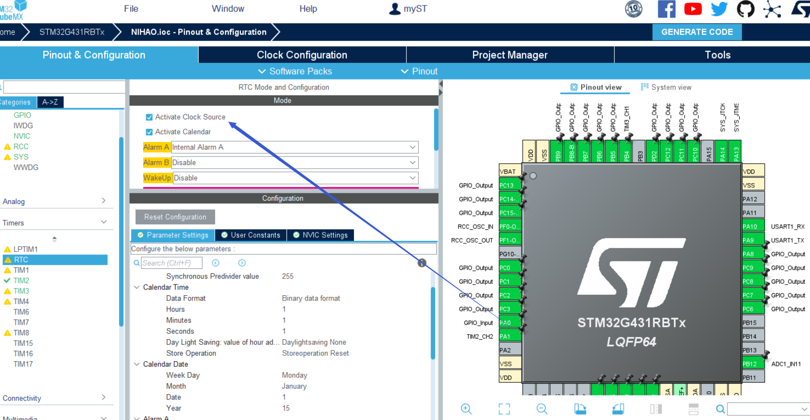
)void RTC_Process(void)
{
HAL_RTC_GetTime(&hrtc,&sTime1, RTC_FORMAT_BIN);
HAL_RTC_GetDate(&hrtc,&sDate1, RTC_FORMAT_BIN);
}
void HAL_RTC_AlarmAEventCallback(RTC_HandleTypeDef *hrtc)
{
Menu_Flag=!Menu_Flag;
}滴答计时器使用方法
//定时50ms发送---代码格式
if(uwTick-UARTTick<50)return;//50ms
UARTTick=uwTick;